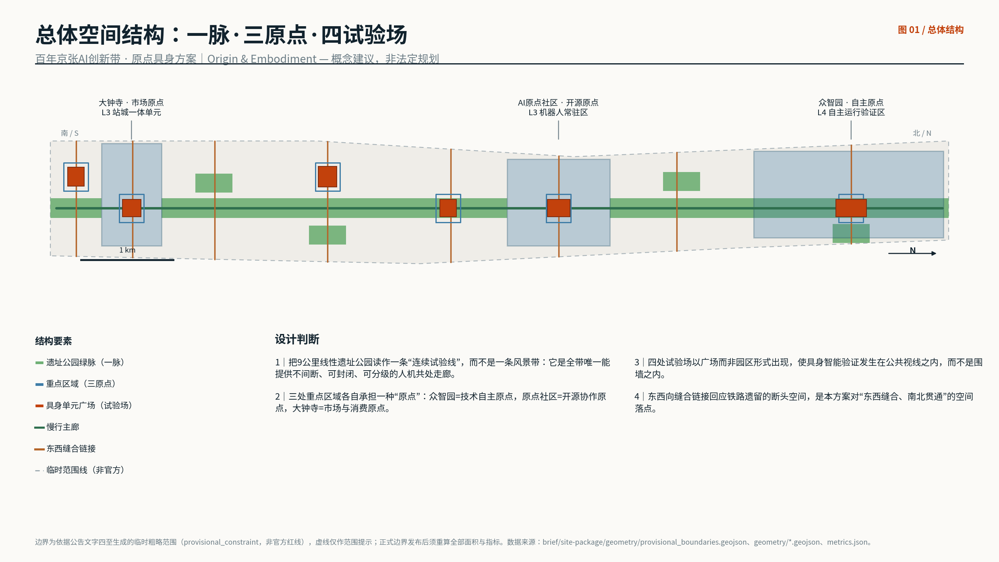
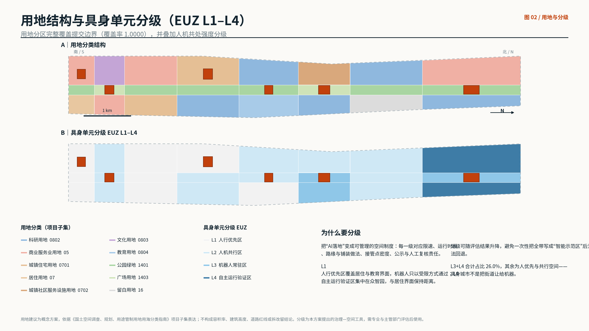
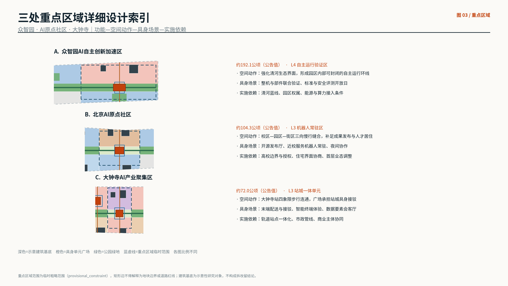
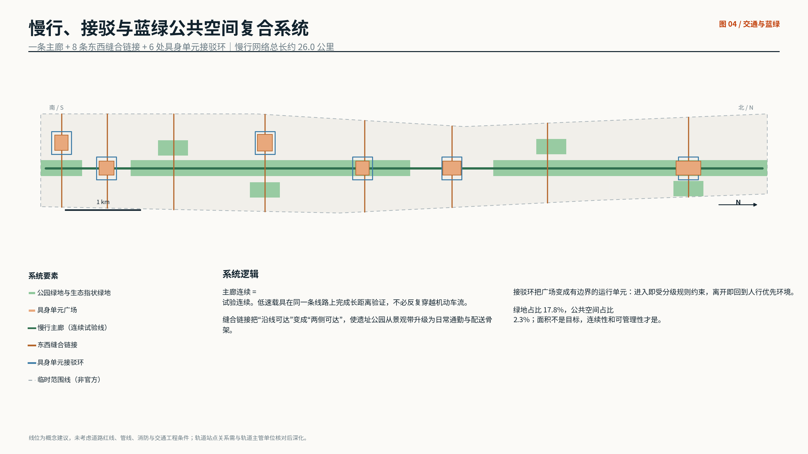
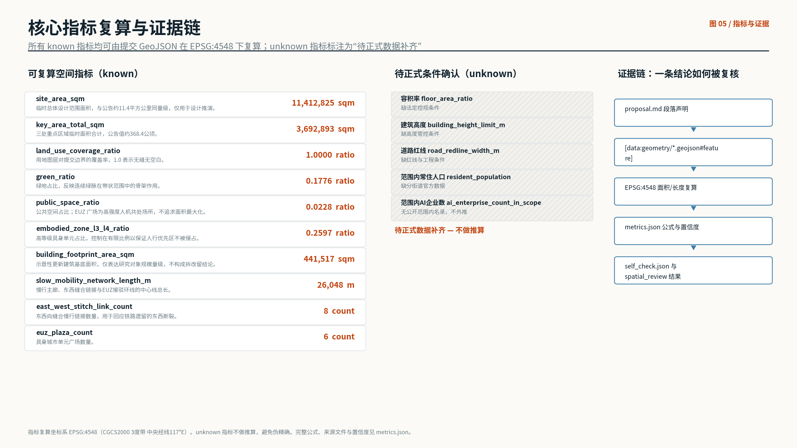

原点·具身 — 京张AI原生社区与具身智能城市试验场
把9公里京张遗址公园读作一条连续的具身智能试验线，提出可分级、可回退的具身城市单元（EUZ L1-L4）制度，并把众智园、AI原点社区、大钟寺分别塑造为技术自主原点、开源协作原点与市场消费原点。全部空间结论均可由提交 GeoJSON 在 EPSG:4548 下复算；边界为临时粗略范围，正式数据发布后须重算。
原点·具身 — 京张AI原生社区与具身智能城市试验场
**主名称：京张原点带｜英文名：Jingzhang Origin Belt｜方案代号：Origin & Embodiment**
本方案的核心主张只有一句：**海淀不缺AI的"脑"，缺的是让AI获得"身体"的城市空间制度。** 因此方案不再把"AI创新带"处理成又一条产业走廊，而是把它设计成一条可分级、可管理、可回退的**具身智能城市试验场**——AI在这里不只是被部署，而是以机器人、低速载具、智能终端和可交互设施的物理形态进入公共空间，并接受人的注视、评价与接管。
设计依据与资料清单
本方案以《百年京张AI创新带城市设计国际方案征集资格预审公告》为第一依据，以《面向全球智能体开展百年京张AI创新带城市设计开源征集任务书摘录》为智能体参与依据，两者共同确定三层范围、三大定位、五大功能、三区两翼与 agent.1—agent.6 必选任务 来源 来源。空间与枚举依据来自仓库场地包，包括用地分类子集、图层枚举、道路等级、建筑类型、规划限值与校验 schema 来源。
资料可用性按仓库公开资料登记表区分：只有登记为 formal-ready 的资料可用于正式主张，background_only 与 provisional_only 资料只能作为背景或临时生成依据，不得升级为官方边界、法定控规、正式评分依据或实施承诺 来源。本方案额外采集的公开资料（海淀AI产业公开统计、京张遗址公园公开报道、6个全球创新区公开资料）均在 sources.json 中登记发布者、URL、检索日期、覆盖范围与限制，并在正文中标注其为公开报道或机构公开信息，而非官方审定结论。
**必须首先说明的边界限制：** 组织方尚未发布官方 SITE_BOUNDARY 与三处 KEY_AREA 的精确 polygon。本方案因此使用仓库提供的临时粗略边界生成全部图层，所有边界要素标注为 official_boundary=false、geometry_role="provisional_constraint"、boundary_precision="provisional_rough" 空间数据。矩形边不得解释为地块边界或道路红线；面积只可作为量级参考。正式数据发布后，用地、绿地、公共空间、建筑、道路、分期与全部指标必须整体重算，而不是替换单个文件 深度。

三层范围工作框架
公告确定的三层范围在本方案中承担三种不同的工作性质，而不是同一张图的三种比例尺。统筹研究范围（约43.6平方公里）回答"AI产业与未来城市形态的组织问题"；总体设计范围（约11.4平方公里）回答"线性遗址空间如何变成城市骨架与制度载体"；重点区域范围（约368.4公顷）回答"三处片区如何达到可深化的详细设计深度" 来源 空间数据。
三层之间由一条贯通逻辑连接：**产业判断 → 空间制度 → 具体片区**。统筹研究得出的判断是"海淀的AI优势已经在模型与人才侧完成积累，瓶颈转移到真实世界的验证环节"；总体设计据此提出具身城市单元（EUZ）分级制度作为空间回应；重点区域则分别承担该制度的三种运行强度 深度 空间数据。
| 层级 | 设计问题 | 本方案回答 | 可复核落点 |
|---|---|---|---|
| 统筹研究范围 43.6 km² | AI生态与未来城市形态如何组织 | 从"模型高地"转向"验证高地"：把真实城市开放为分级测试资源 | sources.json 案例与公开统计 |
| 总体设计范围 11.4 km² | 线性空间如何成为骨架与制度载体 | 一脉贯通 + EUZ L1—L4 分级 + 8条东西缝合链接 | 空间数据 |
| 重点区域 368.4 ha | 三片区如何达到详细设计深度 | 自主原点 / 开源原点 / 市场原点，对应 L4、L3、L3 | 空间数据 |
需要明确的是，三层范围的面积均来自公告文字，不是本方案测算结果；提交几何复算得到的总体设计范围面积为 11,412,825 平方米，与公告约11.4平方公里同量级，仅用于内部一致性校核 指标。这个数字不能被引用为官方面积。
统筹研究范围产业与未来城市研究
**产业判断的事实基础。** 根据公开报道，截至2025年6月海淀区已集聚人工智能企业1900余家，占北京市约七成；同期海淀已备案大模型89款，约占全国三分之一；海淀区AI学者约1.23万人，占北京市总量80%以上；区内37所高校覆盖北京全部985、211高校，21所高校开设AI本科专业。至2025年，海淀备案大模型数量增至122款，人工智能企业超1900家，独角兽企业26家 来源 来源。这些数字说明的不是"还需要更多模型"，而是**模型侧供给已经充分，真实世界验证侧供给不足**。
**这正是本方案的立论起点。** 具身智能（机器人、低速载具、智能终端）与纯软件模型的关键差别在于：它的能力上限由"能在多少真实场景里安全地试错"决定，而不是由参数量决定。北京已明确将具身智能数据集供给列为重点行动方向 来源。因此，一条能提供连续、可封闭、可分级人机共处空间的9公里线性走廊，是海淀在下一阶段最稀缺、也最难被其他城市复制的战略资源 深度。
**全球AI创新生态案例比较（6例）。** 案例选取覆盖"校城融合型、平台聚合型、产城一体型、封闭试验型、智慧园区型、研究机构型"六种模式，用于回答"我们要成为哪一种，以及不要成为哪一种"。
| 案例 | 公开事实 | 模式特征 | 对京张带的启示 |
|---|---|---|---|
| 美国剑桥 Kendall Square | MIT自2010年起与社区共同推进片区更新，被称为"地球上最具创新性的一平方英里"，区域就业规模超5万人 | 校城融合、公共空间反哺创新 | 高校密度必须转译为可停留的街道，而非封闭校园 |
| 法国巴黎 Station F | 由1929年货运站改造，34,000平方米，可容纳约1000家初创企业，2017年由总统揭幕 | 铁路遗产 → 创新平台 | 铁路遗产改造是京张最直接的可比先例 |
| 韩国城南 Pangyo Techno Valley | 官方公布入驻企业1,780家、从业人员83,465人、总面积454,964平方米 | 产城一体、规模聚集 | 规模效率高，但公共性弱，不应照搬 |
| 日本静冈 Toyota Woven City | 2025年9月正式启动，定位为"面向未来出行的真实世界试验场"，一期约5万平方米、约300名居民 | 封闭式企业试验城 | 验证效率高但封闭；京张应做"开放版本" |
| 新加坡 Punggol Digital District | JTC开发的50公顷智慧商务区，聚焦网络安全、人工智能、机器人与金融科技，规划提供28,000个就业岗位 | 智慧园区 + 高校融合 + 开放数字平台 | 数字平台与自主配送系统的制度化值得借鉴 |
| 瑞士 ETH Zurich 机器人中心 | 2025年11月启用改造后的机械实验大厅，设立机器人中心与共享测试区 | 研究机构型共享测试设施 | 共享测试设施应向社会开放而非仅对内 |
**从案例得到的三条不做清单：** 不做封闭园区式试验城（Woven City的效率来自封闭，代价是失去城市性）；不做只有办公规模的产城单元（Pangyo模式在公共生活上是欠缺的）；不做仅以标识和口号命名的"智能示范区"。京张带的独特位置是：**它同时拥有高校密度、铁路遗产、连续线性公共空间和真实居民**——这四者叠加，全球范围内没有直接对标 来源。
**未来城市形态判断。** 当具身智能进入日常，城市形态的变化不会首先发生在建筑高度或路网密度上，而会发生在**街道断面、路缘、铺装、标识和责任制度**上：谁可以在什么时段以什么速度通过、在哪里交接、出问题由谁接管。本方案把这一判断落到 EUZ 分级，而不是停留在愿景描述 标准。
总体设计范围城市更新与控规深度城市设计
命名体系与视觉识别方向（agent.1）
**主名称：京张原点带（Jingzhang Origin Belt）。** "原点"是双重叙事：1909年京张铁路是中国人自主设计建造铁路的原点，今天海淀是中国AI的策源原点。命名体系采用"一主三子"结构：一带主名"京张原点带"；三处重点区域分别命名为**自主原点·众智园（Autonomy Origin）**、**开源原点·AI原点社区（Open Origin）**、**市场原点·大钟寺（Market Origin）**；具身单元统一命名为"原点单元 Origin Unit + 编号"。命名不使用企业名、产品名或人物名，避免商标与肖像风险 来源。
**Logo方向（不提交成品标识，只提交方向）：** 以京张铁路著名的"人"字形展线抽象为两笔交汇的折线，交汇点即"原点"；折线可延展为进度条、路径、编号槽，用于活动、导视与荣誉展示的系统化延展。色彩取"铁轨灰 + 原点橙"，橙色仅用于标注"人机共处"信息，形成城市尺度的一致语义。所有字体与图形须使用可商用授权资源，交付时提供授权凭证；本次提交不附带任何未清权字体或图像 深度。
具身城市单元 EUZ：本方案提出的核心空间—治理工具
EUZ（Embodied Urban Zone）把"AI落地"从口号变成可管理的空间制度。全带按人机共处强度分为四级，每一级同时规定空间做法与治理要求：
| 等级 | 空间含义 | 空间做法 | 治理要求 | 用地占比 |
|---|---|---|---|---|
| L1 人行优先区 | 居住、教育界面 | 连续无障碍步道、无机器人专用道 | 机器人限时限速通过，需人工随行 | 约31.3% |
| L2 人机共行区 | 沿线街道与广场 | 铺装区分、路缘降坡、接管点每200米 | 公示运行时段与责任主体 | 约42.8% |
| L3 机器人常驻区 | 原点社区、大钟寺 | 独立充电与交接位、避让区、夜间照明分级 | 备案 + 保险 + 事故公开复核 | 约10.1% |
| L4 自主运行验证区 | 众智园内部环线 | 可临时封闭的环线、隔离带、应急停车带 | 封闭窗口期运行、全程记录、人工接管席 | 约15.8% |
分级的意义在于**可回退**：任何一级都可以在评估后降级，避免一次性把全带写成"智能示范区"却无法收回。L3与L4合计占比约25.97%，其余约74%仍是人优先或共行空间——具身城市不是把街道让给机器 指标 空间数据。
用地与空间结构
用地方案按"西侧生活与科研界面—中部遗址绿脉—东侧产业与服务界面"的三列结构，叠加8个纵向段落，形成24个用地单元，完整覆盖提交边界且无重叠，覆盖率为 0.999993 指标 空间数据。中部绿脉贯通全带，是唯一连续要素；东西两列按段落分别承担居住、科研、教育、文化、商业服务与留白功能 标准。

**城市更新的判断是"缝合优先于加密"。** 公开报道显示，京张铁路入地释放的地面线性空间，历史上因铁路阻隔在两侧形成多处东西向断头路；遗址公园一期通过拆除护栏围墙实现了四个方向的空间弥合 来源。本方案沿此逻辑继续：新增8条东西向缝合链接，把"沿线可达"升级为"两侧可达"，这是本带最高性价比的空间动作 指标 深度。
关于开发强度：**本方案不提出容积率、建筑高度、建筑密度与道路红线数值。** 这些属于法定控规管控内容，在缺少官方控制条件时给出数值即是伪精确。相关指标在 metrics.json 中标注为"待正式数据补齐" 指标 深度。
重点区域详细设计
三处重点区域承担 EUZ 制度的三种运行强度，并各自回应公告的具体任务要求 空间数据 深度。

自主原点·众智园AI自主创新加速区（约192.1公顷，L4）
**定位：** 全栈自主创新与治理验证核。**空间动作：** 沿清河界面组织生态与创新复合前庭，使园区拥有一条可临时封闭的内部自主运行环线；环线与城市慢行主廊在两处交接，交接点设置人工接管席与公示牌 空间数据。**具身场景：** 整机与部件联合验证、标准制定与安全评测开放日、低碳算力体验。**建筑与规模：** 提出实验楼群、标准与治理工坊、自主接驳枢纽三类空间对象，基底为示意性研究对象，不构成拆改留结论 空间数据。**实施依赖：** 清河蓝线与生态条件、园区权属、能源与算力接入条件；三者未确认前，L4窗口期运行方案不得启动。
开源原点·北京AI原点社区（约104.3公顷，L3）
**定位：** 开源协作与人才生活原点核。**空间动作：** 组织校区—园区—街区三向慢行缝合，把高校成果、初创团队与居民生活在**步行尺度**上连接；补足成果发布、人才居住与社区服务空间 空间数据。**具身场景：** 开源发布厅、近校服务机器人常驻、夜间协作。**关键设计判断：** 本片区是全带唯一同时具备"高校—初创—居住"三重界面的地区，因此定为L3而非L4——**机器人可以常驻，但不能自主到无人接管**；住宅界面一侧保持L1，形成明确的强度梯度 空间数据。**实施依赖：** 高校边界与授权、住宅界面协商、首层业态调整。
市场原点·大钟寺AI产业聚集区（约72.0公顷，L3）
**定位：** 站城一体智能消费与市场核。**空间动作：** 围绕大钟寺站组织四象限步行连通，站前广场承担站城具身接驳职能，使末端配送与人流换乘在同一空间内分层不冲突 空间数据。**具身场景：** 末端配送与接驳、智能终端体验、数据要素会客厅。**业态判断：** 智能原生新业态不是把商场贴上AI标签，而是让"可被机器人服务的商业"重新组织首层：交接位、临时寄存、无人取货点必须进入首层设计，而不是事后加装 空间数据。**实施依赖：** 轨道站点一体化条件、市政管线、商业主体协同。
AI 创新生态、人才画像与 AI+ 场景
用户画像（6类，超过任务书要求的5类）
| 画像 | 核心需求 | 空间响应 | 隐私与治理边界 |
|---|---|---|---|
| 开源开发者 | 发布、协作、夜间工作、社区声誉 | 开源之墙、24小时协作空间、发布厅 | 贡献展示需本人授权；不采集行为轨迹 |
| 具身智能工程师 | 真实场景测试位、失败容错、数据回收 | L3/L4单元、接管席、测试预约系统 | 测试记录用于安全复核，不得转作商业画像 |
| 初创团队 | 低成本工位、算力入口、试验场准入 | 近校孵化楼、共享测试场、端侧算力驿站 | 算力与数据服务须另行授权 |
| 周边居民 | 通勤、休闲、低扰动、安全感 | L1人行优先区、夜间照明分级、投诉直达入口 | 居民不得被默认纳入任何测试数据集 |
| 高校师生 | 成果转化、跨校协作、日常慢行 | 校区—园区缝合链接、转化驿站 | 校园数据与科研成果须授权 |
| 国际访客与企业客户 | 展示、洽谈、可理解的城市叙事 | 大钟寺路演客厅、双语导视、朝圣路线 | 企业标识与案例须清权后使用 |
AI场景卡（12张，超过任务书要求的10张）
每张场景卡给出：服务对象、空间载体、EUZ等级、数据边界、人工复核方式。
| 编号 | 场景 | 空间载体 | 等级 | 数据与人工复核边界 |
|---|---|---|---|---|
| SC-01 | 开源发布厅 | AI原点社区 | L3 | 仅使用公开提交记录；展示内容需贡献者授权 |
| SC-02 | 安全治理沙盒开放日 | 众智园 | L4 | 测试全程录制供复核，录制不用于身份识别 |
| SC-03 | 端侧算力驿站 | 沿线服务节点 | L2 | 只记录负载与能耗，不记录任务内容 |
| SC-04 | 慢行断点识别 | 遗址公园主廊 | L2 | 低侵入传感只输出聚合统计，不存储影像 |
| SC-05 | 末端配送与交接 | 大钟寺站前 | L3 | 交接位公示；配送记录与个人身份分离存储 |
| SC-06 | 近校服务机器人常驻 | AI原点社区 | L3 | 夜间限速；每台设备须有可查询责任主体 |
| SC-07 | 无障碍伴随导航 | 全带主廊 | L2 | 用户主动发起，不做被动跟随 |
| SC-08 | 数据要素会客厅 | 大钟寺 | L3 | 只展示已授权、可审计的数据流通案例 |
| SC-09 | 国际路演客厅 | 大钟寺 | L2 | 影像发布须获得在场人员同意 |
| SC-10 | 清河低碳创新廊 | 众智园临河界面 | L3 | 生态监测数据公开，不含个人数据 |
| SC-11 | AI文化导览 | 清华园站遗址段 | L1 | 史实内容需人工策展与史料核对 |
| SC-12 | 全球AI活动周路线 | 全带公共空间 | L2 | 活动期间临时升级等级，结束后自动回落 |
**统一治理原则：** 数据最小化、公开来源、可解释、可人工接管、可事后复核。任何场景不得以采集个人身份信息为前置条件；任何自动判断都必须存在人工复核入口 来源 深度。
产业测试验证场景（4个，超过任务书要求的3个）
1. **整机—部件联合验证场（众智园，L4）：** 面向机器人本体、传感与控制部件企业，提供可临时封闭的环线与真实坡度、铺装、天气条件；产出为公开的测试条件说明，而非企业成绩排名。 2. **末端配送城市验证场（大钟寺，L3）：** 面向配送机器人与低速载具，验证站城交接、电梯衔接、人流高峰避让；产出为可复用的交接位设计参数。 3. **近校服务机器人验证场（AI原点社区，L3）：** 面向服务与陪伴类机器人，验证与居民、学生的长期共处；本场景必须有居民参与机制与退出机制。 4. **公共空间可达性验证场（遗址公园主廊，L2）：** 面向无障碍设备与导航系统，验证连续步道、坡度与断点；产出直接反馈到城市更新项目清单。
四个验证场均为**概念建议**，其开设需要主管部门许可、安全评估、保险与公众告知，不构成已批准的运营安排 来源。
用地、建筑规模与拆改留方案
用地方案依据用地用海分类指南项目子集表达，形成完整闭合的24个用地单元，无缝无重叠 标准 空间数据。建筑方案提出13处示意性建筑基底，基底面积合计约441,517平方米，仅用于表达研究对象的规模量级 指标。
**拆改留的方法而非结论。** 在缺少现状建筑普查、权属、控规与工程条件的情况下，本方案不给出任何具体地块的拆改留判断，而是提出四步判定方法：第一步识别铁路遗产与文化价值对象（如清华园站房，明确标注为保留展示对象）；第二步识别东西缝合的空间障碍对象；第三步识别首层业态不适配具身服务的对象；第四步才进入权属与经济可行性评估。前三步可由公开信息完成，第四步必须由专业团队与权属主体共同完成 深度 空间数据。
建筑风貌与体量控制建议采取"沿绿脉低、向两侧递增"的原则，并在L3/L4单元周边要求首层通透与可视化接管点。所有高度、退线与界面控制均标注为"待正式数据补齐"，不给出数值 深度 指标。
交通、轨道、市政与公共服务设施
慢行系统由三部分组成：一条贯通全带的慢行主廊（同时是连续试验线）、8条东西向缝合链接、6处具身单元接驳环线，中心线总长约26.0公里 指标 空间数据。主廊连续意味着测试连续：低速载具可在同一条线路上完成长距离验证，而不必反复穿越机动车流 深度。
**轨道一体化重点在大钟寺站。** 四象限步行连通不仅是行人问题，也是具身配送问题：站前广场需要同时容纳人流换乘与机器人交接，方案建议在平面上分层而非在时间上错峰。所有涉及轨道设施、桥隧与地下空间的内容均为概念建议，须与轨道与交通主管单位核对 来源。

**市政与新型基础设施。** 端侧算力驿站、分布式能源接入点与机器人充电交接位应作为一类新的"具身市政设施"统一规划，其选址依附于EUZ单元而非独立布点。公共服务设施方面，方案建议在L3单元同步配置人才服务、社区服务与投诉直达入口——**居民对具身设施的投诉通道必须与设施本身同步建成**，否则治理成本会在运行后集中爆发 深度 空间数据。管线、能源、排水、防洪与消防条件缺失，均列为正式深化前置条件。
蓝绿空间、公共空间与城市风貌
蓝绿系统以遗址公园主脉为骨架，绿地占比约17.76%，公共空间占比约2.28% 指标 指标。公共空间面积不追求最大化：6处具身单元广场合计约26万平方米，其价值在于**边界清晰、规则可公示、可被管理**，而不是面积规模 空间数据 深度。
AI朝圣地标（4处，超过任务书要求的3处）
| 地标 | 位置 | 叙事内核 | 荣誉展示机制 |
|---|---|---|---|
| 原点碑 Origin Marker | 清华园站遗址段 | 1909年铁路原点与今日智能原点的双重叠加 | 镌刻公开的历史节点与开源里程碑，年度增补 |
| 开源之墙 The Open Wall | AI原点社区 | 让"贡献"成为可被城市看见的公共事实 | 展示获授权的贡献者与提交记录，可申请下架 |
| 具身广场 Embodiment Plaza | 大钟寺站前 | 人与机器共处的日常现场，而非表演场 | 展示当期在运行的设备与责任主体 |
| 零号试验场 Testbed Zero | 众智园 | 失败被记录、被公开、被学习的地方 | 公开测试条件与复核结论，不做企业排名 |
**四处地标共享一条反网红化原则：** 地标以"可核查的事实"而非"可拍照的造型"取胜；不设置未经授权的人物、企业标识与商标；不做过度娱乐化表达 来源 深度。
文化叙事与导视系统（agent.5）
京张铁路1909年建成，是中国人自主勘测、设计、施工的第一条铁路；2019年京张高铁开通，清华园隧道全长6,020米在城区段入地，释放出今天的线性空间 来源。遗址公园全线规划南起北京北站、北至北五环，全长约9公里，沿线涉及多个街镇与近70个社区，一期已于2023年开放 来源。
**叙事结构为"三次自主"：** 第一次是1909年铁路技术的自主，第二次是中关村以来产业技术的自主，第三次是今天AI全栈能力的自主。三次自主共享同一条空间线索，这使文化叙事不是装饰，而是**解释本方案为何选择"自主"作为核心词**的依据 深度。导视系统与一带Logo系统分层：Logo负责识别，导视负责说明——导视必须同时承载文化解释与EUZ规则公示两类信息，中英双语，并保证无障碍可读。历史内容须经人工策展与史料核对，不得由生成内容直接上墙 标准。
更新项目清单、实施政策与分期计划
| 编号 | 项目 | 类型 | 阶段 | 主要依赖 |
|---|---|---|---|---|
| JZ-01 | 遗址公园慢行主廊连续化 | 公共空间/交通 | 一期 | 断点核查、道路红线、桥下空间 |
| JZ-02 | 东西缝合链接8条 | 交通/城市更新 | 一至三期 | 权属、红线、交通组织复核 |
| JZ-03 | 原点社区开源之墙与发布厅 | 公共空间/产业服务 | 一期 | 高校授权、首层业态调整 |
| JZ-04 | 大钟寺站四象限步行连通 | 轨道一体化 | 二期 | 轨道站点、市政管线、商业协同 |
| JZ-05 | 具身单元EUZ规则试点（2处） | 治理/运营 | 一期 | 主管部门许可、安全评估、保险 |
| JZ-06 | 众智园清河创新界面与自主环线 | 蓝绿/产业 | 三期 | 蓝线、生态、能源与算力 |
| JZ-07 | 具身市政设施（充电与交接位） | 新基建 | 二期 | 能源接入、运营主体 |
| JZ-08 | 全球AI活动周公共路线 | 运营/品牌 | 一至三期 | 公共空间许可、活动安全、版权清权 |
分期为三期，分别以AI原点社区、大钟寺、众智园为主战场 空间数据 深度。**分期逻辑是"先制度、后设施、再规模"：** 一期以最小成本验证EUZ规则是否可运行（规则试点不需要大规模工程）；二期把验证过的规则固化为设施标准；三期才进入高强度自主验证区建设。这一顺序可以避免"设施先行、规则滞后"的常见失败。
长期运营与活动体系（agent.6）
**年度活动体系：** 建议形成"一周一日常"的双层结构——年度"京张原点周"（Origin Week）承担国际传播与成果发布；日常层面每月一次"开放测试日"，把验证过程本身变成公共内容。**开发者社区运营：** 以开源之墙为线下锚点、以公开贡献记录为参与凭证，形成"线上贡献—线下展示—城市空间使用权"的正循环；社区规则须明确禁止刷量与身份冒用。**场景开放机制：** 建立场景目录、申请流程、安全评估与退出机制四件套，任何场景开放都必须可退出。**转化路径：** 开发者→初创团队→企业落地，分别对应共享测试场准入、孵化空间、产业空间三类空间供给。
以上活动、社区与运营机制均为**概念建议与参考方案**，不构成政府活动安排、招商承诺、资金支持或政策确定事项 来源。
指标体系、面积复算与合规矩阵
全部 known 指标均可由提交 GeoJSON 在 EPSG:4548（CGCS2000 3度带，中央经线117°E）下复算，公式、来源文件与置信度保存在 metrics.json 指标 深度。指标分为三类：可由几何直接复算的空间指标（面积、比例、长度、数量）；需要官方控规支撑的管控指标（容积率、高度、密度、红线）；需要运营数据持续校准的绩效指标（场景使用频次、活动参与度、投诉响应时长）。第二、三类在本次提交中一律标注为"待正式数据补齐"，不做推算 指标。

compliance_matrix.json 逐条覆盖公告1.3、1.4、1.5全部任务与 agent.1—agent.6 全部必选任务，每条给出章节、图层、指标、图纸、HTML页面、来源、假设与自检项的映射；standard_matrix.json 覆盖全部强制专业标准；design_depth_matrix.json 记录15项设计深度的完成状态 标准 标准。读者可以从正文任一结论出发，经由证据标记进入图层与指标，再由自检结果确认其可复算性。
风险、版权与合规说明
**第一类风险：数据缺口风险。** 官方边界、重点区域polygon、控规条件、道路红线、权属、市政与文保条件全部缺失，因此本方案的一切面积、比例与空间关系都是"临时几何下的量级参考"，不是审定结论 空间数据 深度。清华园站房及铁路遗产敏感区在约束图层中以示意范围提示，实际保护范围以文物主管部门公布为准。
**第二类风险：具身智能特有的治理风险。** 包括人机冲突与伤害、无障碍通行被侵占、噪声与夜间扰动、责任主体不清、事故复核缺位、测试数据被转作商业用途。本方案的应对是把这些风险写进空间制度（EUZ分级、接管点、公示牌、投诉直达入口），而不是留给运营阶段临时处理。即便如此，L3与L4单元的实际开设仍必须经过主管部门许可、安全评估、保险安排与公众告知。
**第三类风险：叙事越界风险。** 本方案所有空间落地建议均为**概念建议、参考方案或可供专业团队深化研究的材料**，不替代法定规划，不构成政府审定结论、投资承诺、工程可行性结论或地块级拆改留结论。
**版权与生成方式披露。** 本包全部文本、图示、GeoJSON、HTML 与 PDF 由 AI agent 基于公开资料生成；引用的公开报道与机构公开信息已在 sources.json 登记发布者、URL 与检索日期，正文以转述而非整段引用方式使用；未使用任何未清权字体、图片、商标、肖像或企业标识；HTML 页面为完全离线静态页面，不加载远程脚本、地图瓦片、字体、iframe、表单或跟踪代码。详细声明见 report/copyright_statement.md。
参考资料
- 公告与任务书：
brief/site-package/standards/references/project-official-announcement.md、agent-open-call-taskbook-0518.md - 场地包：
brief/site-package/design_brief.json、allowed_design_space.json、enums/、ranges/planning_limits.json、schemas/ - 资料登记表：
data/source_registry.json - 外部公开资料（发布者、URL、检索日期与限制见
sources.json）：海淀AI产业公开统计与政府工作报告、京张铁路遗址公园公开报道、Kendall Square、Station F、Pangyo Techno Valley、Toyota Woven City、Punggol Digital District、ETH Zurich 机器人中心公开信息 - 完整机器索引：
sources.json、metrics.json、compliance_matrix.json、standard_matrix.json、design_depth_matrix.json来源